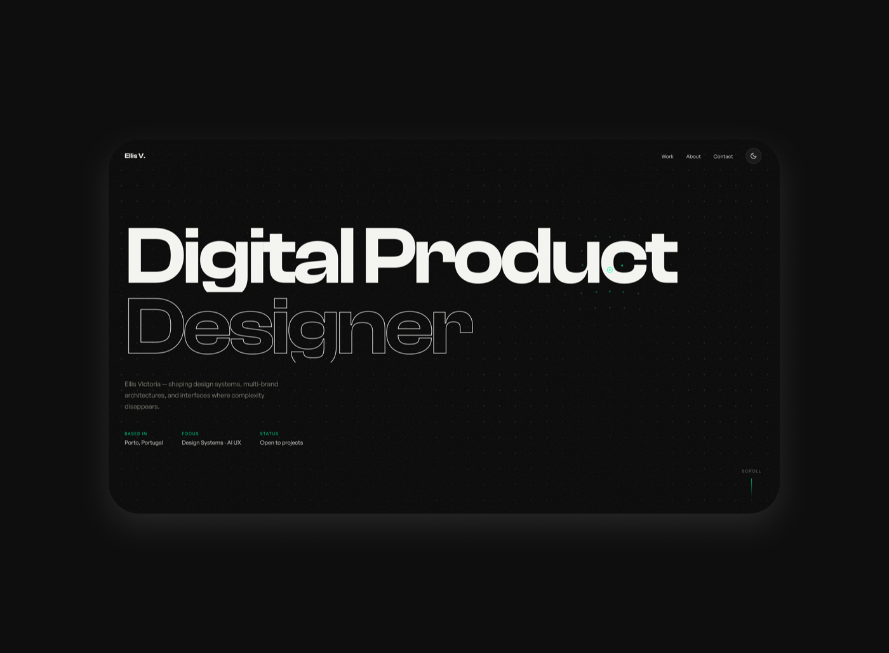

Build with AI agents
I didn't just use AI to build this portfolio — I engineered the builder. A custom Web Designer agent, encoded with my standards, driven by a library of planned, single-purpose prompts.

Designing the
designer
Most people prompt an AI page by page and accept whatever comes back. I took the opposite route: instead of designing the portfolio directly, I designed the system that designs it.
That meant two things working together — a custom Web Designer agent that carries my standards into every request, and a library of planned, single-purpose prompts that tell it exactly what to do, one step at a time.
The result is repeatable craft. Every page in this portfolio came out of the same encoded principles — the same token model, the same accessibility baseline, the same approval-gated workflow — so quality stays consistent instead of drifting from chat to chat.
The site you're reading is the proof: it's the output of the system, not a one-off.
One agent, encoded
with my standards
The Web Designer agent is a custom mode I authored — a specialist that combines visual-design judgement with clean, semantic code. It carries an expertise matrix: modern HTML, CSS & JS, mobile-first responsive layout, a three-layer design-token model, and WCAG accessibility with AA as the required baseline.
Critically, it never assumes a tech stack and never produces code without approval — it works one step at a time, stating what it's about to do and waiting for an explicit go-ahead.
Two guardrails make it safe to trust. A scoped tool allowlist limits what it can touch, and an NDA / employer-content guardrail means client names and proprietary work are never used without explicit permission — confidential work stays protected by default.
In short: the agent behaves like a junior designer who already knows my house rules, and asks before acting.
Build a Portfolio Page
Structure and code a full portfolio or case-study page from the shared template.
Design a Component
Design and build a single reusable, accessible portfolio component.
Create a Token System
Define a three-layer CSS custom-property system — primitive, semantic, component.
Audit for Accessibility
Review markup and styles against WCAG AA — keyboard, contrast, semantics, ARIA.
Create a Responsive Layout
Build mobile-first layouts with a deliberate breakpoint strategy.
Review a UI Design
Critique an existing design and propose concrete, prioritised improvements.
Plan before
you build
Before touching a single page, I wrote a set of plans. The first — "Chat 0" — front-loads the shared work: it extracts the CSS that was duplicated across every case study into one external stylesheet. Do that once, and every later edit becomes cheap and predictable.
From there, each page gets its own plan: a paste-able context header, a focused task list, image-wiring notes, and a precise "Done when" checklist that defines success.
Each plan also carries a fallback split — if a job is too big for one session, it breaks cleanly into smaller chats (1A, 1B) instead of overloading a single prompt.
The plans act as the agent's brief. They keep scope tight, context minimal, and outcomes verifiable — so the agent never has to guess what "good" looks like.
Setup First
Extract shared CSS once, so every later page-edit is cheap and consistent.
One Plan per Page
Context header, task list, and a "Done when" acceptance checklist per case study.
Split When Big
Oversized jobs break cleanly into smaller chats instead of one bloated prompt.
One prompt,
one change
Inside each plan, work is broken into atomic prompts — reorder the grid, enforce one image per project, refine a single CTA. Each prompt does exactly one thing, which makes it easy to verify and safe to run in any order.
Every prompt follows the same shape: Context → Task → Constraints → Verification. The constraints fence off everything that must not change; the verification spells out exactly how to confirm it worked.
This separation is what makes the system reliable. Small, independent, self-checking prompts compose into a finished portfolio — with no tangled, do-everything requests and no silent regressions.
It's the same discipline I bring to design systems: small, well-named, single-responsibility parts that combine cleanly.
Set the scene
Exactly which file, which classes, and what state things are in — no ambiguity.
The one change
A single, precise action — reorder, dedupe an image, refine a CTA arrow.
What not to touch
Explicit fences so nothing else shifts — order, copy, tags or layout stay put.
Prove it worked
A checklist to confirm the result and catch regressions before moving on.
The portfolio is
the proof
Everything you're looking at came out of this system: a token-driven light and dark theme, a shared case-study template, an interactive background, and accessible, semantic markup throughout.
Because the standards live in the agent and the scope lives in the plans, each page is consistent with the next — without me re-explaining my preferences every time.
The real deliverable isn't a single website. It's a repeatable way of working — an agent plus a prompt architecture I can point at the next page, the next component, or the next project.
Design the builder once; build forever.